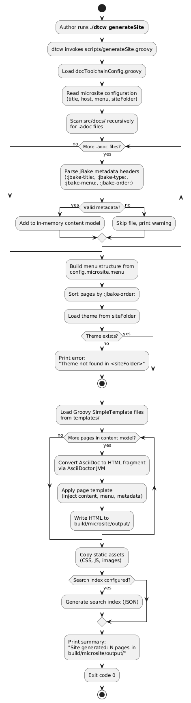
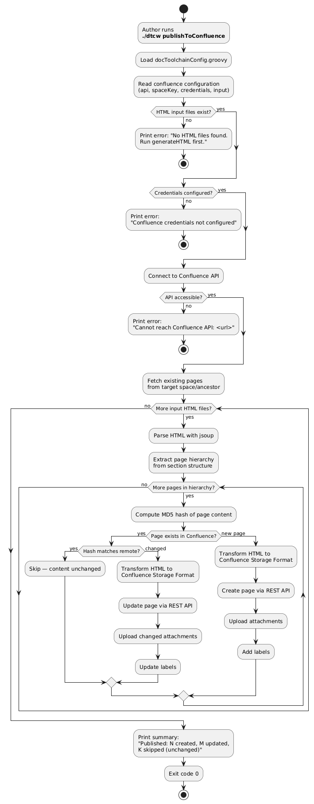
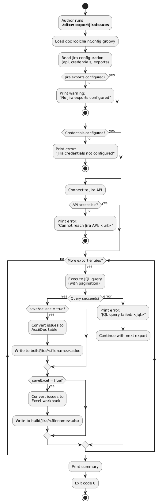
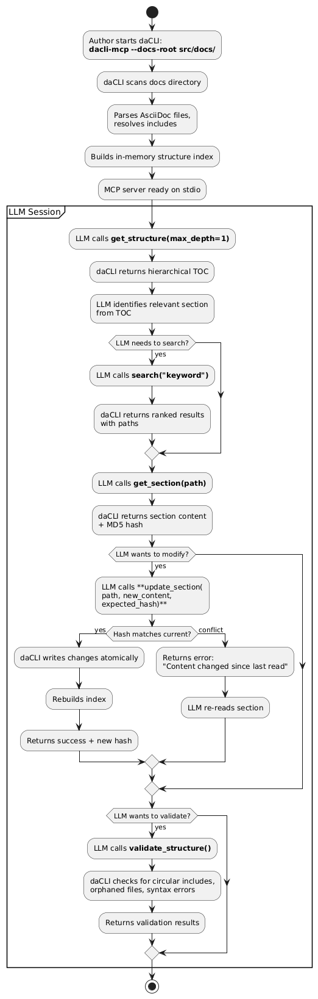
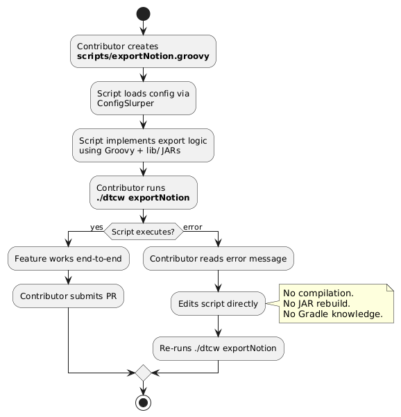

Failed to generate image: PlantUML preprocessing failed: [From <input> (line 30) ]
@startuml
start
:Author runs **./dtcw generateHTML**;
:dtcw detects execution environment
(local / docker / sdk);
if (Java installed?) then (yes)
else (no)
if (Headless mode?) then (yes)
:Print error: "Java not found.\nRun: ./dtcw local install java";
stop
else (no)
:Prompt user to install Java;
if (User accepts?) then (yes)
:Download and install JDK;
else (no)
stop
endif
endif
endif
if (docToolchain installed?) then (yes)
else (no)
:Download and install docToolchain;
endif
:Construct classpath from lib/ directory;
:Invoke: java -cp <classpath>
groovy.ui.GroovyMain
^^^^^
Syntax Error? (Assumed diagram type: activity)
@startuml
start
:Author runs **./dtcw generateHTML**;
:dtcw detects execution environment
(local / docker / sdk);
if (Java installed?) then (yes)
else (no)
if (Headless mode?) then (yes)
:Print error: "Java not found.\nRun: ./dtcw local install java";
stop
else (no)
:Prompt user to install Java;
if (User accepts?) then (yes)
:Download and install JDK;
else (no)
stop
endif
endif
endif
if (docToolchain installed?) then (yes)
else (no)
:Download and install docToolchain;
endif
:Construct classpath from lib/ directory;
:Invoke: java -cp <classpath>
groovy.ui.GroovyMain
scripts/generateHTML.groovy;
:Script loads docToolchainConfig.groovy
via ConfigSlurper;
if (Config file exists?) then (yes)
else (no)
:Print error:
"docToolchainConfig.groovy not found";
stop
endif
if (inputFiles configured?) then (yes)
else (no)
:Print warning:
"No inputFiles configured";
stop
endif
:Create output directory (build/html5/);
while (More inputFiles?) is (yes)
:Read AsciiDoc source file;
if (File exists?) then (yes)
:Invoke AsciiDoctor JVM
with imageDirs, attributes;
if (AsciiDoc processing succeeds?) then (yes)
:Write HTML to build/html5/;
else (no)
:Print error with file name
and line number;
:Continue with next file;
endif
else (no)
:Print warning:
"File not found: <path>";
:Continue with next file;
endif
endwhile (no)
:Print summary:
"Generated N files in build/html5/";
:Exit code 0;
stop
@enduml
docToolchain v4 — Specification
.1. Use Cases
.1.1. UC-1: Generate HTML Documentation
Description
A documentation author converts AsciiDoc source files to HTML output using the docToolchain CLI.
Actors
-
Documentation Author (primary)
-
DevOps Engineer (CI/CD context)
Preconditions
-
AsciiDoc source files exist in the configured
inputPath -
docToolchainConfig.groovylists at least one input file withhtmlformat
Activity Diagram
Acceptance Criteria
Feature: Generate HTML Documentation
Scenario: Successful HTML generation
Given a project with docToolchainConfig.groovy
And inputFiles contains [file: 'manual.adoc', formats: ['html']]
And the file src/docs/manual.adoc exists
When I run ./dtcw generateHTML
Then the exit code is 0
And the file build/html5/manual.html exists
And the HTML contains the rendered content of manual.adoc
Scenario: Fast execution without Gradle overhead
Given docToolchain is already installed locally
And Java is available
When I run ./dtcw generateHTML on a 50-page project
Then the first AsciiDoc processing starts within 3 seconds
And the total execution completes within 10 seconds
Scenario: Missing input file
Given inputFiles contains [file: 'missing.adoc', formats: ['html']]
And the file src/docs/missing.adoc does not exist
When I run ./dtcw generateHTML
Then a warning "File not found: missing.adoc" is printed
And the exit code is 0
And other configured files are still processed
Scenario: Invalid AsciiDoc syntax
Given inputFiles contains a file with invalid AsciiDoc syntax
When I run ./dtcw generateHTML
Then an error message with file name and line number is printed
And the exit code is 0
And other configured files are still processed
Scenario: No Java installed, headless mode
Given Java is not installed
And DTC_HEADLESS is set to true
When I run ./dtcw generateHTML
Then the exit code is non-zero
And the message contains "Java not found"
Scenario: Auto-install Java
Given Java is not installed
And the terminal is interactive
When I run ./dtcw generateHTML
And I accept the Java installation prompt
Then JDK is downloaded and installed to $HOME/.doctoolchain/jdk/
And generateHTML proceeds normally after installation
Scenario: v3 config backward compatibility
Given a docToolchainConfig.groovy from a v3 project
When I run ./dtcw generateHTML
Then the output is identical to v3's output
And no errors or warnings about deprecated config format are shown.1.2. UC-2: Generate Microsite
Description
A documentation author generates a complete static documentation website from AsciiDoc sources using the custom Groovy-based site generator (replacing jBake).
Actors
-
Documentation Author (primary)
Preconditions
-
AsciiDoc source files with jBake-compatible metadata headers exist
-
micrositesection is configured indocToolchainConfig.groovy -
Groovy SimpleTemplate files exist in
src/site/templates/
Activity Diagram

Acceptance Criteria
Feature: Generate Microsite
Scenario: Successful site generation
Given a project with AsciiDoc files containing jBake metadata headers
And microsite is configured in docToolchainConfig.groovy
And Groovy SimpleTemplate files exist in src/site/templates/
When I run ./dtcw generateSite
Then the exit code is 0
And build/microsite/output/ contains HTML files for each page
And each HTML file has navigation, header, and footer from templates
And static assets (CSS, JS) are copied to the output directory
Scenario: Apple Silicon compatibility
Given I am running on macOS with Apple Silicon (ARM64)
When I run ./dtcw generateSite
Then the site is generated without errors
And no JNI or native library errors occur
Scenario: Modern responsive UI
Given the site is generated with the default theme
When I open a page in a desktop browser
Then the layout is responsive
And a dark mode toggle is available
And full-text search is functional
Scenario: jBake metadata backward compatibility
Given AsciiDoc files use v3 jBake metadata headers
And headers include :jbake-title:, :jbake-type:, :jbake-status:, :jbake-menu:, :jbake-order:
When I run ./dtcw generateSite
Then all files are processed correctly
And menu order matches :jbake-order: values
And page titles match :jbake-title: values
Scenario: v3 Groovy SimpleTemplate compatibility
Given Groovy SimpleTemplate files from a v3 project
When I run ./dtcw generateSite
Then the templates render without errors
And template variables (content, config, published_date, etc.) are populated
Scenario: Missing template directory
Given src/site/templates/ does not exist
When I run ./dtcw generateSite
Then the exit code is non-zero
And the error message says "Theme not found"
Scenario: File without jBake metadata
Given an AsciiDoc file without :jbake-title: header
When I run ./dtcw generateSite
Then the file is skipped with a warning
And other files are processed normally.1.3. UC-3: Publish to Confluence
Description
A documentation author publishes generated HTML pages to Atlassian Confluence with smart change detection.
Actors
-
Documentation Author (primary)
-
DevOps Engineer (CI/CD context)
Preconditions
-
HTML files exist in
build/html5/(user must rungenerateHTMLfirst) -
Confluence API endpoint and credentials are configured
-
Target Confluence space exists
Activity Diagram

Acceptance Criteria
Feature: Publish to Confluence
Scenario: Successful publish with changes
Given generateHTML has been run
And Confluence credentials are configured
And the target space exists
When I run ./dtcw publishToConfluence
Then changed pages are created or updated in Confluence
And unchanged pages are skipped
And the summary shows counts for created, updated, and skipped pages
Scenario: Idempotent publish (no changes)
Given the same documentation was published previously without changes
When I run ./dtcw publishToConfluence
Then no Confluence page versions are created
And the summary shows all pages as "skipped (unchanged)"
Scenario: Missing HTML input
Given build/html5/ does not exist or is empty
When I run ./dtcw publishToConfluence
Then the exit code is non-zero
And the error says "No HTML files found. Run generateHTML first."
Scenario: Invalid credentials
Given Confluence credentials are incorrect
When I run ./dtcw publishToConfluence
Then the exit code is non-zero
And the error indicates authentication failure
Scenario: Confluence API unreachable
Given the configured Confluence API URL is unreachable
When I run ./dtcw publishToConfluence
Then the exit code is non-zero
And the error includes the API URL.1.4. UC-4: Export Jira Issues
Description
A documentation author exports Jira issues to AsciiDoc or Excel format for inclusion in documentation.
Actors
-
Documentation Author (primary)
Preconditions
-
Jira API endpoint and credentials are configured
-
At least one export entry with JQL query is defined
Activity Diagram

Acceptance Criteria
Feature: Export Jira Issues
Scenario: Successful export to AsciiDoc
Given Jira API credentials are valid
And exports contains a JQL query that returns results
And saveAsciidoc is true
When I run ./dtcw exportJiraIssues
Then build/jira/<filename>.adoc contains an AsciiDoc table with issues
Scenario: Successful export to Excel
Given Jira API credentials are valid
And exports contains a JQL query that returns results
And saveExcel is true
When I run ./dtcw exportJiraIssues
Then build/jira/<filename>.xlsx contains a workbook with issues
Scenario: JQL query returns no results
Given a JQL query that matches no issues
When I run ./dtcw exportJiraIssues
Then the output file is created with headers but no rows
And the exit code is 0
Scenario: Jira API unreachable
Given the configured Jira API URL is unreachable
When I run ./dtcw exportJiraIssues
Then the exit code is non-zero
And the error includes the API URL.1.5. UC-5: LLM Navigates Documentation via daCLI
Description
An LLM agent accesses docToolchain-managed documentation through daCLI’s MCP server to read, search, and modify content.
Actors
-
LLM Agent (primary, via MCP client)
-
Documentation Author (starts daCLI)
Preconditions
-
daCLI is installed and running:
dacli-mcp --docs-root src/docs/ -
AsciiDoc source files exist in the docs root
-
LLM client supports MCP protocol
Activity Diagram

Acceptance Criteria
Feature: LLM Navigates Documentation via daCLI
Scenario: Efficient navigation
Given daCLI is running with docs-root pointing to a 50-page project
When an LLM calls get_structure, then search, then get_section
Then the LLM locates the target section in at most 3 tool calls
And total token usage is under 10k (vs. 100k for reading all files)
Scenario: Section modification with optimistic locking
Given an LLM has read a section and received its hash
When the LLM calls update_section with the correct expected_hash
Then the section is updated atomically
And a new hash is returned
And the source file on disk reflects the change
Scenario: Concurrent modification conflict
Given an LLM has read a section and received hash "abc123"
And another process has modified the same section
When the LLM calls update_section with expected_hash "abc123"
Then the update is rejected with a conflict error
And the original content is preserved
Scenario: Structure validation
Given a documentation project with a circular include
When an LLM calls validate_structure
Then the result contains a warning about the circular include
And the warning identifies the files involved.1.6. UC-6: Add New Feature (Contributor Workflow)
Description
A contributor adds a new export feature to docToolchain by creating a single Groovy script.
Actors
-
Contributor / Developer
Preconditions
-
docToolchain v4 source code is checked out
-
Java is installed
Activity Diagram

Acceptance Criteria
Feature: Add New Feature as Contributor
Scenario: Script-first development
Given a contributor creates scripts/exportNotion.groovy
When the contributor runs ./dtcw exportNotion
Then the script executes without any compilation step
And no files other than the script need to be modified
Scenario: Fast feedback loop
Given a contributor modifies scripts/exportNotion.groovy
When the contributor re-runs ./dtcw exportNotion
Then the modified script executes within 5 seconds of invocation
And the changes are reflected immediately
Scenario: Script discovery
Given scripts/exportNotion.groovy exists
When a user runs ./dtcw tasks
Then exportNotion appears in the task listFeedback
Was this page helpful?
Glad to hear it! Please tell us how we can improve.
Sorry to hear that. Please tell us how we can improve.